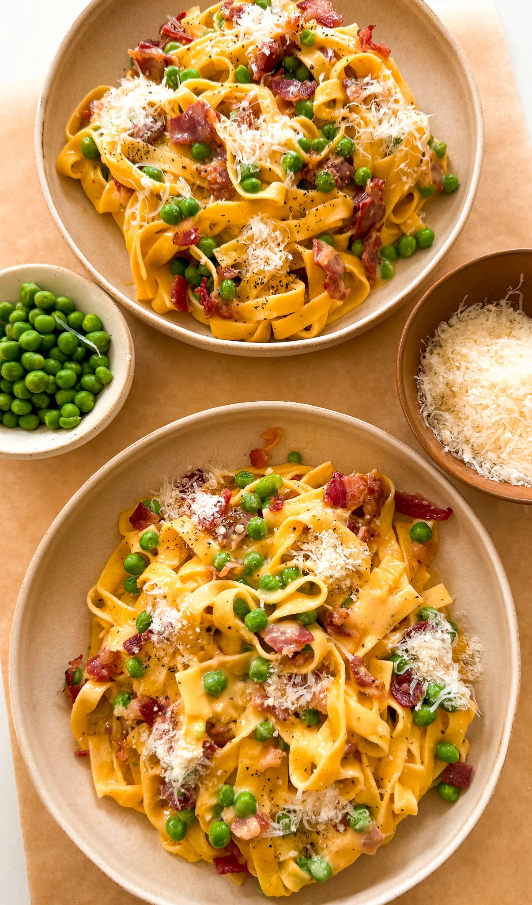

Dinner
Carbonara Pasta

Prep Time: 5 minutes
Total Time: 30 minutes
Cook Time: 25 minutes
Yields: 4
This carbonara recipe is a quick and cozy dish that's perfect
for any weeknight dinner. The creamy sauce, crispy beef bacon,
and tender pasta come together in the best way, with a pop of
green peas for a little extra freshness. It's simple to make
but tastes like you put in a lot of effort—just the kind of
recipe I love to share!
Jump to recipe
Dinner
Carbonara Pasta

This carbonara recipe is a quick and cozy dish that's perfect
for any weeknight dinner. The creamy sauce, crispy beef bacon,
and tender pasta come together in the best way, with a pop of
green peas for a little extra freshness. It's simple to make
but tastes like you put in a lot of effort—just the kind of
recipe I love to share!
Print recipe
Pin Recipe
Prep Time: 5 minutes
Total Time: 30 minutes
Cook Time: 25 minutes
Yields: 4
Ingredients
-
12 ounces spaghetti, fettuccine, or tagliatelle
-
2 whole eggs
-
4 egg yolks
-
1 1/2 cups freshly grated parmesan
-
1/2 teaspoon black pepper, plus more to taste
-
8 ounces beef bacon, cut into small pieces
-
1/2 teaspoon brown sugar
-
2 teaspoons minced garlic
-
1/2 to 2/3 cup pasta water (reserved from cooking the
pasta)
-
1/3 cup green peas (optional)
-
salt, to taste
Instructions
-
Cook the Pasta: Bring a large pot of salted water to
a boil. Add the pasta and cook according to the package
instructions until al dente. Reserve about 1 cup of the
pasta water before draining.
-
Prepare the Sauce: In a large bowl, whisk together
the eggs, egg yolks, freshly grated parmesan, and black
pepper until smooth and well combined. Set aside.
-
Cook the Bacon: In a large skillet over medium heat,
cook the beef bacon with garlic and brown sugar until
crispy, about 5-7 minutes. Transfer the cooked bacon to a
bowl on the side, leaving the bacon fat in the pan.
-
Combine Bacon Fat with Egg Mixture: Carefully pour
the hot bacon fat into the bowl with the egg and parmesan
mixture, whisking constantly to combine. Then, temper the
egg mixture by slowly adding a bit of the reserved pasta
water at a time until you get a creamy thick consistency,
whisking to avoid scrambling the eggs. Don't add all the
pasta water or your sauce will be too thin. You can always
add more later.
-
Cook the Carbonara: Pour the tempered egg mixture
back into the skillet. Cook over low heat, stirring
constantly until the sauce thickens and becomes creamy.
Note: Stir well and make sure the heat is not too high to
prevent the sauce from curdling.
-
Combine and Serve: Add the cooked pasta back to the
pan with the sauce. Toss everything together until the
pasta is well coated. Then, add the cooked bacon and green
peas, mixing until well combined. Season with salt and
additional black pepper to taste. Serve immediately with
extra parmesan if desired. Enjoy!